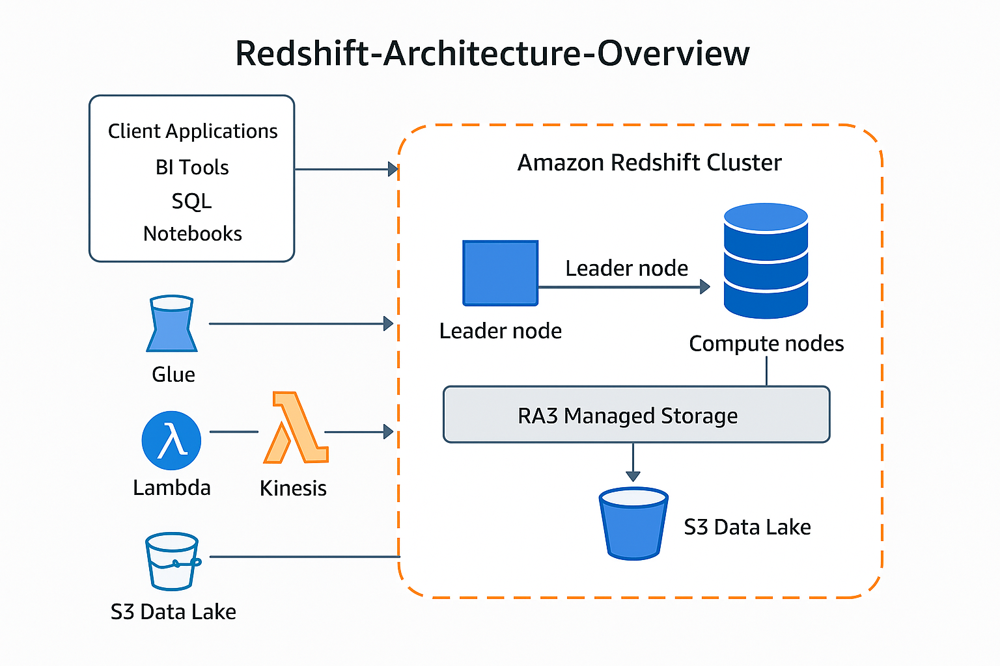
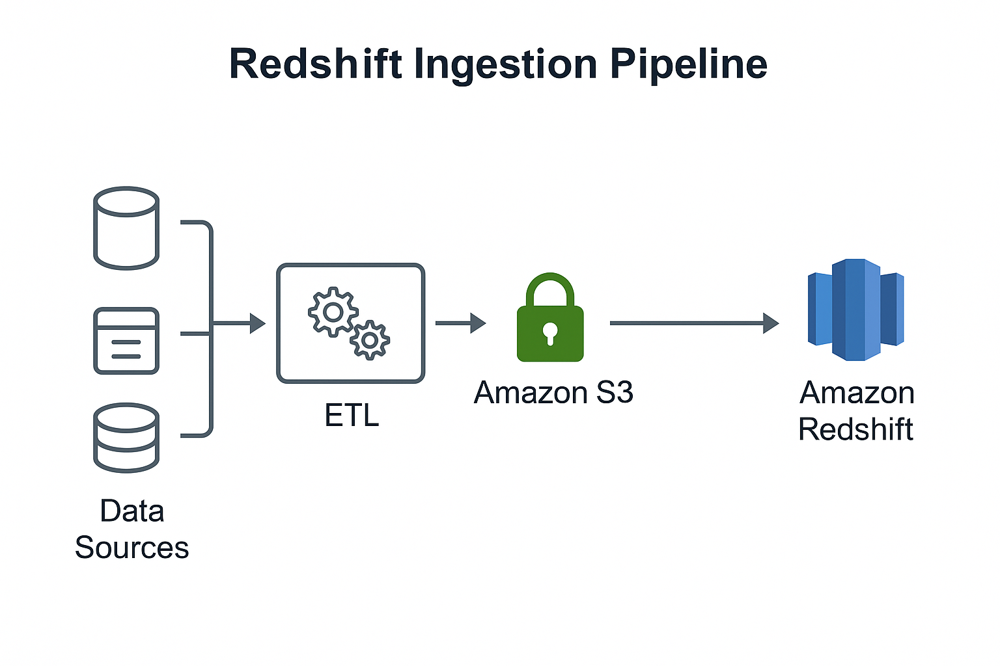
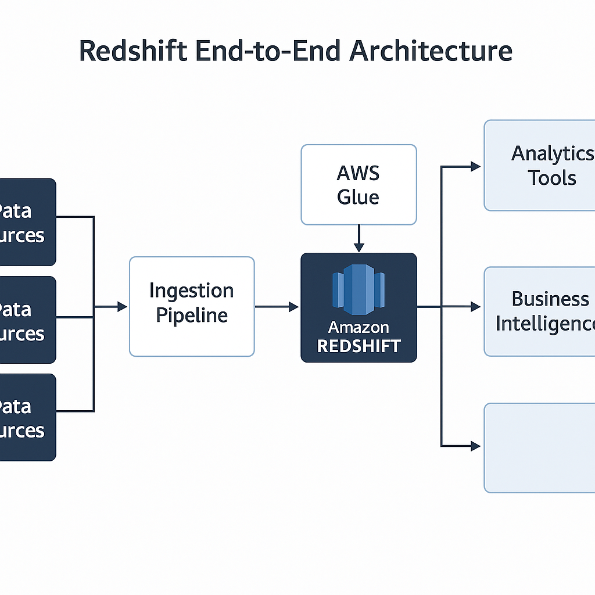

---
---
{% include menu.html title="Redshift Architecture" %}
Amazon Redshift Architecture Overview
Amazon Redshift is a fully managed, MPP (massively parallel processing)
cloud data warehouse. Its architecture is built around clusters of nodes
that separate query coordination from parallel execution and integrate
tightly with the broader AWS analytics ecosystem.
High-Level Architecture
-
Client Tools (BI tools, SQL clients, notebooks)
connect over JDBC/ODBC or the Redshift Data API.
-
Amazon Redshift Cluster consists of:
-
Leader node – accepts connections, parses SQL,
creates query plans, and coordinates execution.
-
Compute nodes – execute the query fragments in
parallel and store local data.
-
RA3 managed storage and S3 data lake
provide scalable, cost-optimized storage.
-
Surrounding AWS Services such as Amazon S3, AWS Glue,
AWS Lambda, Amazon Kinesis, and Amazon QuickSight integrate for data
ingestion, cataloging, transformation, and visualization.
Illustrative Architecture Diagram
Example conceptual diagram (placeholder image for documentation):

Cluster Components
1. Leader Node
-
Connection endpoint for SQL clients (JDBC/ODBC, Data
API).
-
SQL parser and optimizer:
- Parses incoming SQL statements.
-
Builds execution plans and decides how to distribute work across
compute nodes.
-
Query coordination:
- Sends query fragments to compute nodes.
-
Aggregates intermediate results and returns final result sets to
clients.
-
System catalog:
-
Stores metadata about databases, tables, schemas, users, and
permissions.
2. Compute Nodes
-
Parallel execution layer:
- Each compute node runs multiple query slices (worker processes).
- Slices operate on subsets of data in parallel.
-
Local storage / cache:
-
RA3 nodes use SSD-based cache with managed storage transparently
extended to S3.
- Older node types (DS/DC) use attached storage disks only.
-
Data distribution:
-
Tables are distributed by KEY,
EVEN, or ALL distribution styles.
-
Distribution strategy affects how data is partitioned across nodes
and how joins are executed.
-
Columnar storage and compression:
- Data is stored column-wise to reduce I/O for analytical queries.
-
Automatic and manual compression encodings reduce storage footprint
and improve performance.
Cluster Diagram
Example diagram of a leader node coordinating multiple compute nodes:

Storage Architecture
1. RA3 Managed Storage
-
Separation of compute and storage:
- Hot data is cached on node-local SSD.
-
Colder data is automatically offloaded to Amazon S3, managed by
Redshift.
-
Independent scaling of compute (number and size of RA3
nodes) and storage (TBs of managed storage).
-
Automatic tiering of data between cache and S3 without
application changes.
2. Data Lake Integration (Redshift Spectrum)
-
Redshift Spectrum allows querying data directly in
Amazon S3:
- Supports open formats like Parquet, ORC, JSON, CSV.
-
Uses an external catalog (typically AWS Glue Data Catalog) for table
definitions.
-
Hybrid query execution:
-
Single SQL query can join Redshift local tables with external tables
in S3.
-
Pushes as much filtering and projection as possible down to the
Spectrum layer.
Storage & Spectrum Diagram
Example diagram showing Redshift with managed storage and Spectrum
querying S3:

Workload Management (WLM) & Concurrency Scaling
1. Workload Management
-
Queues:
- Redshift uses WLM queues to group and prioritize queries.
-
Each queue can be configured with memory, concurrency limits, and
user/group mappings.
-
Automatic WLM:
-
Redshift can dynamically manage memory and slots, reducing manual
tuning.
-
Query monitoring rules:
-
Rules can log, hop, or abort queries based on runtime, rows scanned,
or other metrics.
2. Concurrency Scaling & Elastic Resize
-
Concurrency Scaling:
-
Automatically adds transient clusters to absorb bursts of query
load.
-
Queries are routed to these clusters without changing client
connections.
-
Elastic Resize:
- Changes number or type of nodes in an existing cluster.
- Used for longer-term scaling events.
Data Ingestion & Integration
1. Data Loading Patterns
-
COPY command from S3:
-
Primary bulk-loading mechanism, designed for parallel ingestion.
-
Reads multiple objects in parallel to maximize throughput.
-
Streaming via Kinesis / MSK / Firehose:
-
Events land in S3 or directly into Redshift using integration
options.
-
Federated queries:
-
Redshift can query data in Amazon RDS, Aurora, and other
Postgres-compatible sources using federated query.
2. ETL/ELT and Orchestration
- AWS Glue jobs for ETL and schema discovery.
-
AWS Step Functions or
Amazon Managed Workflows for Apache Airflow (MWAA) for
orchestration.
-
Third-party ETL tools (Informatica, Fivetran, dbt,
etc.) for complex pipelines.
Ingestion Diagram
Example diagram showing ingestion from multiple sources:

Security & Networking Architecture
1. Network Isolation
-
Amazon VPC:
- Clusters are deployed inside a VPC for network isolation.
-
Security groups and network ACLs control access to the cluster
endpoint.
-
PrivateLink and VPC endpoints:
-
Private connectivity from on-premises or other VPCs to Redshift.
2. Encryption & Access Control
- Encryption at rest using KMS-managed keys.
-
Encryption in transit with SSL/TLS between clients and
the leader node.
-
IAM integration:
- IAM roles for COPY/UNLOAD between Redshift and S3.
- IAM-based authentication to the Redshift Data API.
-
Fine-grained access control:
- Database users, groups, and GRANT/REVOKE permissions.
-
Row-level and column-level security for sensitive datasets.
Query Lifecycle Summary
-
Client sends SQL query to the Redshift endpoint.
-
Leader node parses and optimizes the query, building a
distributed execution plan.
-
Leader node dispatches work to slices on the compute
nodes.
-
Compute nodes scan columnar data from local storage or
managed storage (and/or S3 via Spectrum).
-
Partial results are aggregated on compute nodes and
streamed back to the leader node.
-
Leader node performs final aggregation/sorting and
returns the result set to the client.
Typical Reference Architecture Pattern
-
Data sources:
- Operational databases (RDS, Aurora, on-prem DBs).
- Event streams (Kinesis, MSK, IoT).
- Files dropped into S3 from external systems.
-
Staging and transformation:
- S3 as a centralized staging and historical data lake.
-
ETL/ELT pipelines using Glue, Lambda, EMR, or third-party tools.
-
Core Redshift warehouse:
- RA3 cluster hosting curated dimensional and fact models.
-
Data sharing to downstream Redshift clusters (for departmental or ML
workloads).
-
Consumption layer:
-
Amazon QuickSight and other BI tools query Redshift using SQL.
-
ML workloads connect via SageMaker or custom Python/R notebooks.
End-to-End Architecture Diagram
Example documentation image tying everything together:

{% include footer.html %}